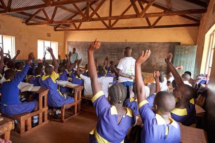

By Smira Chowdhary | July 2026

A photo depicting children in a school in Kenya.
Over 273 million children and youth are out of school worldwide due to poverty, conflict, and discrimination. UNESCO notes that this global crisis keeps children trapped in cycles of hardship and limits their future. Moreover, this right is firmly rooted in international legal frameworks.
The right to quality education is already firmly rooted in Article 26 of the Universal Declaration of Human Rights and other international legal instruments, the majority of which are the result of the work of UNESCO and the United Nations.
Many children are unable to attend school due to inadequate infrastructure, lack of teaching materials, and a lack of food, water, or essential living materials. Additionally, children don’t have access to a proper teacher, with an estimated shortage of 44 million teachers resulting in situations where teachers have to educate a class of 100 pupils. Moreover, many schools do require enrollment or material costs, against international law which mandates free education for primary and secondary school. Thus, many students living in extreme poverty can’t afford to pay for school, blocking the path to education.
Girls and other minorities, like people with disabilities, are also forbidden from education due to gender roles previously assigned. Other factors that bar them from education include early marriage or the introduction of periods and inadequate supplies to handle them. According to estimates, 9 million girls in the world of primary school age will never go to school. Globally, disabled people are discriminated against leading them to be 49% more likely to never go to school than the average child.
Furthermore, youth who live in Gaza and other conflict-affected regions can’t attend school because they are too busy trying to survive, flee, or just live in these areas. The schools are also often one of the first pieces of infrastructure destroyed. These children just don’t have the security to go to school; they have to pick between their lives or their education.
However, all is not lost. However, if governments were to increase education funding through policy reforms, these children don’t need to be deprived of their education. Children in crisis-ridden areas rely on NGOs like Room to Read and UNICEF for education so expanding their reach and influence would greatly help these children.
We have come a long way, and we have a long way to go. Nevertheless, with hard work, humanity will provide all children with a proper education and the tools necessary to build a better life for themselves.
Theirworld. LEAP Programme at School in Kenya (Image).
UNICEF USA. Back to School: Education Access.
Andrea Bocelli Foundation. The Right to Education Worldwide.